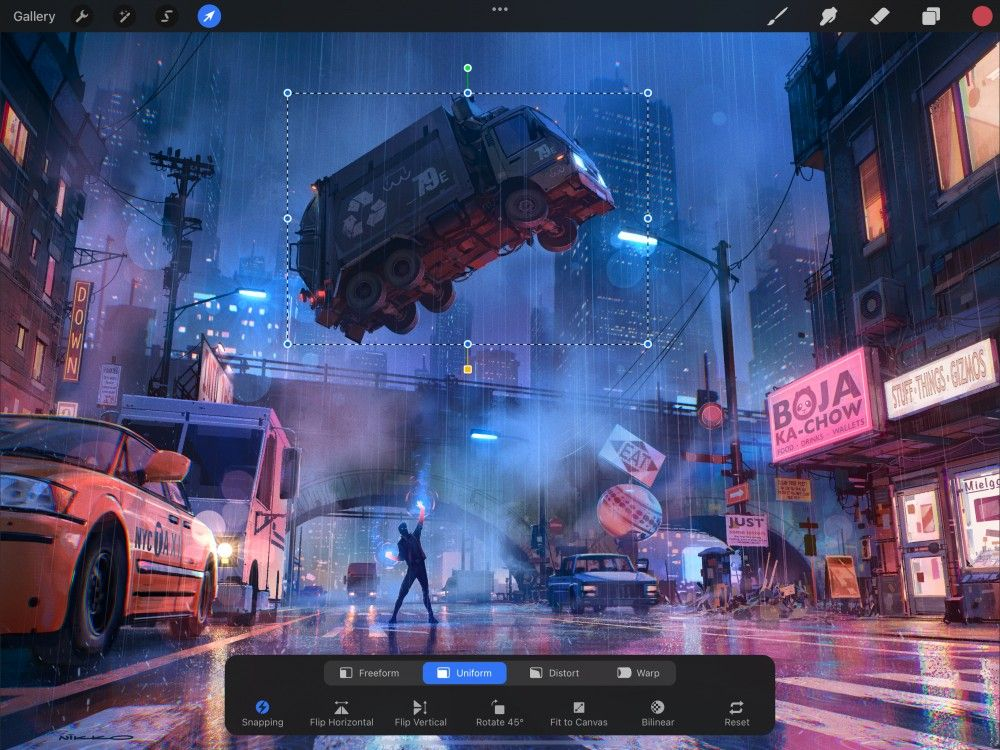

📖 Đã dịch sang tiếng Việt. Thuật ngữ chuyên môn giữ tiếng Anh — rê chuột để xem nghĩa (tooltip).
Interpolation
There's more than one way to interpolate a pixel. Here's where you can fine-tune the engine behind the Transform tool.
How Interpolation Works (cách nội suy hoạt động)
Interpolation (nội suy) là phương pháp dùng để điều chỉnh pixel trong ảnh khi thu phóng, xoay, hoặc biến đổi.


Hãy tưởng tượng ảnh của bạn là một chấm đỏ đơn lẻ — một pixel — nằm trên một lưới, và bạn muốn làm nó lớn hơn. Khi bạn biến đổi pixel đó, lưới giữ nguyên nhưng chấm đỏ phình to. Để làm việc này, chấm đỏ cần chiếm nhiều ô hơn trên lưới. Nơi từng chỉ là một pixel, giờ có thể chiếm hai pixel, hoặc bốn, hoặc nhiều hơn nữa. Procreate cần tính ra các pixel đó nằm ở đâu và trông thế nào. Procreate nhìn vào ảnh bạn đang có và phỏng đoán để lấp đầy các khoảng trống được tạo ra khi ảnh phình to để chiếm thêm không gian.
Giờ hãy tưởng tượng điều này xảy ra với từng pixel một trong một minh họa hoàn chỉnh khi bạn có các pixel màu khác nhau nằm cạnh nhau. Interpolation (nội suy) là cách Procreate xác định cần bao nhiêu pixel để cho ảnh tạo ra kích thước hoặc hình dáng mới. Và, các pixel đó định vị thế nào để các cạnh giữa các màu khác nhau trong tác phẩm của bạn giữ được độ rõ nhất có thể. Interpolation làm tất cả việc này, ngay cả khi ảnh của bạn có thể đã bị kéo giãn, ép, hoặc xoay trên lưới đó.
Pro Tip
Every time you resize an image, the interpolation process happens again. After a few times, you might start to see the edges in your image degrading and looking fuzzy. Think of this like making a photocopy of a photocopy of a photocopy. You lose a little more quality each time you transform. Try to avoid repeatedly transforming the same part of your image.
Interpolation Methods (các phương pháp nội suy)
Cải thiện kết quả biến đổi bằng cách dùng cài đặt nội suy tốt nhất cho tác phẩm.
Cài đặt Interpolation (nội suy) là biểu tượng tròn thứ hai từ bên phải trong Transform bar (thanh biến đổi). Mặc định, Interpolation được đặt thành Bilinear (song tuyến).
Khi bạn chạm Bilinear (song tuyến), bạn được đưa ra ba lựa chọn, mỗi lựa chọn có ưu điểm riêng. Chọn cái phù hợp nhất với mục đích của bạn.
Pro Tip
The label of this icon changes to reflect your current Nearest, Bilinear, or Bicubic Interpolation mode. But, the icon graphic will always look the same.
Nearest Neighbor (láng giềng gần nhất)
Nearest Neighbor (láng giềng gần nhất) là loại nội suy đơn giản và nhanh nhất. Nó chỉ xem xét một pixel ở mỗi bên cạnh khi tính toán cách hiển thị kết quả biến đổi. Việc này đôi khi có thể khiến kết quả trông khía răng cưa. Nó thường là tùy chọn tốt cho các phép biến đổi đơn lẻ nhanh và đơn giản,
Bilinear (song tuyến)
Bilinear interpolation (nội suy song tuyến) xem xét vùng pixel 2x2 bao quanh cạnh và đưa ra giá trị trung bình có trọng số của cả bốn pixel. Nó mất nhiều thời gian xử lý hơn, nhưng thường cho kết quả mượt hơn Nearest Neighbor (láng giềng gần nhất).
Bicubic interpolation (nội suy song lập phương) xem xét vùng 16 pixel bao quanh. Việc này ưu tiên hơn cho các pixel gần cạnh hơn. Vì thế, nó là phương pháp chậm nhất trong ba phương pháp nhưng mang lại kết quả mượt và chính xác nhất.
Still have questions?
If you didn't find what you're looking for, explore our video resources on YouTube or contact us directly. We’re always happy to help.